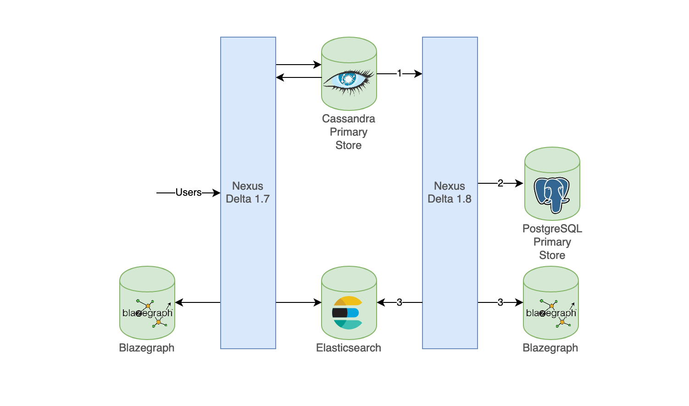

You are browsing the docs for the snapshot version of Nexus, the latest release is available here
v1.7 To v1.8 Migration
The v1.8 release of Delta introduces PostgreSQL as sole option for the Delta primary event store.
(To have a complete list of improvements, see here).
These improvements require to replay all existing events, moving them from Cassandra to PostgreSQL, and to reindex all data to Elasticsearch/Blazegraph.
The following steps describe how to perform the migration. At the end, Delta v1.8 will be running using PostgreSQL as primary store.
Depending on the number and the complexity of existing resources and schemas in the system, the migration may take several hours to complete.
The migration itself can be run in three ways:
- Switching off your Delta 1.7-base Nexus deployment, and re-starting it with Delta 1.8. Then re-uploading all the data in the new instance. This only requires setting up the PostgreSQL instance, and upgrading the Delta image.
- Switching off Delta 1.7, and starting Delta 1.8 by following the steps described in this document.
- Starting a Delta 1.8 in parallel to Delta 1.7 by following the steps described in this document. When ready, the 1.7 can be switched off and be replaced by Delta 1.8. This step also requires to run a second instance of Blazegraph.
The choice of migration will depend on your current setup, needs, and uptime requirements that you want to uphold for your users. At Blue Brain, we have opted to run two instances in parallel. This allows for an online migration from Cassandra to PostgreSQL that does not disrupt the users using Delta 1.7. While both instances are running, any actions taken by the users in the 1.7 instance will be migrated and reflected in the Delta 1.8 instance.
The third option can be summarized as follows:

- Events from Cassandra are read (in order) by the Delta 1.8 instance
- These events are pushed to the PostgreSQL instance
- Only when the data migration is complete and indexing enabled, data is reindexed in Elasticsearch and Blazegraph using new indices
Requirements
- Running an instance of Delta 1.7
- PostgreSQL
- Version: ^15.1
- Storage: minimum 80% of the storage dedicated to Cassandra in Delta 1.7
- CPU: minimum 50% of the CPU allocated to Cassandra in Delta 1.7
- RAM: minimum 50% of the RAM allocated to Cassandra in Delta 1.7
The values stated above are indicative and should be adapted in function of your actual Delta usage.
Prepare Cassandra
Perform a backup
Perform a backup of the original keyspace delta_1_7 and perform a repair of the Cassandra nodes:
nodetool repair
We will assume from hereon that the existing Cassandra keyspace is delta_1_7.
Create a materialized view on the messages table on the original keyspace
Check the total space used (in bytes) by the original delta_1_7.messages table:
nodetool tablestats delta_1_7.messages | grep "Space used (total)"
It is safe to assume that the materialized view will take the same amount of space as the original table, and sufficient storage space should be ensured.
When ready, create a materialized view on the messages table on the keyspace delta_1_7:
CREATE MATERIALIZED VIEW IF NOT EXISTS delta_1_7.ordered_messages AS
SELECT ser_manifest, ser_id, event
FROM delta_1_7.messages
WHERE timebucket is not null
AND persistence_id is not null
AND partition_nr is not null
AND sequence_nr is not null
AND timestamp is not null
PRIMARY KEY(timebucket, timestamp, persistence_id, partition_nr, sequence_nr)
WITH CLUSTERING ORDER BY (timestamp asc);
The materialized view will take some time to build depending on the number of events.
Check the materialized view
These operations may take a while to complete depending on the number of rows in the messages table.
- On the messages table:
cqlsh -e 'select timebucket from delta_1_7.messages' | grep rows
- On the materialized view:
cqlsh -e 'select timebucket from delta_1_7.ordered_messages' | grep rows
When the materialized view has the same number of rows as the table then it is ready for migration.
Prepare PostgreSQL
Create migration tables
Run the following command in the PostgreSQL instance to create the temporary tables needed for the migration:
CREATE TABLE IF NOT EXISTS public.migration_offset(
name text NOT NULL,
akka_offset text NOT NULL,
processed bigint NOT NULL,
discarded bigint NOT NULL,
failed bigint NOT NULL,
instant timestamptz NOT NULL,
PRIMARY KEY(name)
);
CREATE TABLE IF NOT EXISTS public.ignored_events(
type text NOT NULL,
persistence_id text NOT NULL,
sequence_nr bigint NOT NULL,
payload JSONB NOT NULL,
instant timestamptz NOT NULL,
akka_offset text NOT NULL
);
Create the PostgreSQL tables
Run the commands from the Delta 1.8.x schema scripts to create the tables necessary for Delta operations.
Elasticsearch and Blazegraph indices
For the migration, there are two ways to make sure that the new Delta 1.8 indices do not overlap the ones from Delta 1.7 (for both Elasticsearch and Blazegraph):
- Delete all existing indices
- Configure a different prefix for the new Delta 1.8 indices using the
app.defaults.indexing.prefixfield, which sets the default prefix value for both Elasticsearch and Blazegraph indices.
Elasticsearch defaults to a maximum of 1000 shards per node in the cluster. If you intend to keep both old and new indices for the time of the migration, ensure that you can double your amount of shards within this limit. It is also possible to raise this limit by configuring cluster.max_shards_per_node. In both cases, monitor your resource usage, and consider allocating more resources to Elasticsearch for the time of the migration.
Blazegraph stores data using a journaling system, which is append-only. Consider backing up your existing Blazegraph journal (by making a copy of the blazegraph.jnl file), and running with a clean instance of Blazegraph. This can allow a significant reduction in the size of the journal as only the latest state will be saved.
Migration configuration
Pull the docker image for Delta 1.8
Pull the docker image for Delta 1.8 from Docker Hub
docker pull bluebrain/nexus-delta:1.8.x
Configure Delta in migration mode
This section defines the mandatory configuration to run Delta in migration mode.
Configuration file
A migration configuration file needs to be made available at a path accessible by Delta 1.8, which will be references by an environment variable. Important fields are:
migration.batch.max-elements: maximum number of events to push to PostgreSQL at oncemigration.replay.max-buffer-size: maximum number of events to read from Cassandra at oncemigration.replay.keyspace: name of the existing Cassandra keyspacemigration.first-time-bucket: the time bucket from which to start the migrationmigration.ignored.blacklisted: a list of projects to ignore during the migration
Environment variables
The following environment variables need to be set when launching Delta v1.8 in migration mode:
KAMON_ENABLED: false (not mandatory but recommended)MIGRATE_DATA: trueDISABLE_INDEXING: trueMIGRATION_CONF: /path/to/migration.conf (cf. configuration file)DELTA_PLUGINS: /opt/docker/plugins/
JVM parameters
- Adopt the same values as the one for your current deployment
Java properties
| Description | Property | Example value |
|---|---|---|
| PostgreSQL host | app.defaults.database.access.host | |
| PostgreSQL port | app.defaults.database.access.port | |
| PostgreSQL pool size | app.defaults.database.access.pool-size | |
| PostgreSQL username | app.defaults.database.username | |
| PostgreSQL password | app.defaults.database.password | |
| PostgreSQL database name | app.defaults.database.name | |
| Service binding interface | app.http.interface | 0.0.0.0 |
| Service Uri Path prefix | app.http.base-uri | {delta-url}:8080/v1 |
| Cassandra username | datastax-java-driver.advanced.auth-provider.username | |
| Cassandra password | datastax-java-driver.advanced.auth-provider.password | |
| Cassandra auth class | datastax-java-driver.advanced.auth-provider.class | PlainTextAuthProvider |
| Cassandra contact point (1) | datastax-java-driver.basic.contact-points.0 | cassandra-1:9042 |
| Cassandra contact point (2) | datastax-java-driver.basic.contact-points.1 | cassandra-2:9042 |
| Cassandra timeout | datastax-java-driver.basic.request.timeout | 10 seconds |
| Cassandra pagination | datastax-java-driver.basic.page-size | 500 |
| Cassandra compression lib | datastax-java-driver.advanced.protocol.compression | lz4 |
| Cassandra reconnect | datastax-java-driver.advanced.reconnect-on-init | true |
| Secrets encryption password | app.encryption.password | |
| Secrets encryption salt | app.encryption.salt | |
| Remote storage enabling | plugins.storage.storages.remote-disk.enabled | true/false |
| S3 storage enabling | plugins.storage.storages.amazon.enabled | true/false |
For more information on the configuration of Delta, please refer to the Nexus configuration page.
Migrating events from Cassandra to PostgreSQL
Starting the data migration
Start Delta v1.8 with the configuration described in the configuration section. As the application starts, the Delta log should contain the following lines:
2023-02-08 13:02:26 INFO c.e.b.n.d.sourcing.stream.Supervisor - Starting Delta supervisor
2023-02-08 13:02:26 INFO c.e.b.n.d.sourcing.stream.Supervisor - Delta supervisor is up
2023-02-08 13:02:27 INFO c.e.b.n.d.sourcing.stream.Supervisor - Starting 'migration/migrate-from-cassandra' with strategy 'TransientSingleNode'.
Monitor the health of the platform
Please check the general health of the platform.
Check the migration progress:
Run the following query on table migration_progress in your PostgreSQL instance:
SELECT name, akka_offset, processed, discarded, failed, instant FROM public.migration_offset;
This will return a similar response:
name | akka_offset | processed | discarded | failed | instant
-----------+--------------------------------------+-----------+-----------+--------+----------------------------
migration | c64c3630-a3a8-11ed-9b31-b3b1660f61b0 | 267972 | 0 | 0 | 2023-02-03 10:54:39.507+01
The table contains the following information:
processed: total number of processed events that have been processeddiscarded: total number of events that have been discardedfailed: number of failures risen during the migrationinstant: timestamp of the last event processed by migration when migration last saved progress
Once the migration terminates, the sum of the processed, discarded, and failed columns should be equal to the number of events in your Delta 1.7 deployment.
When looking at the logs, these lines should be also repeated (the timestamp should match the current date/hour):
2023-02-08 12:56:26 INFO c.e.b.n.m.replay.ReplayEvents - We got 0 rows
2023-02-08 12:56:26 INFO c.e.b.n.m.replay.ReplayEvents - Next offset is 1ced2000-a7a8-11ed-8080-808080808080 (2023-02-08 12:00:00:000)
2023-02-08 12:56:26 INFO c.e.b.n.m.replay.ReplayEvents - No results for current bucket, waiting for 3000 milliseconds
Keep looking regularly in the logs to look if the migration is still ongoing without problems. If the migration crashes, a restart should allow it to start back from where it stopped.
Post data migration checks
Internal PostgreSQL consistency check
Once the migration has reached the current date/time, check that the sum of global and scoped events is equal to the number of processed events. Running the following query, the two columns should be equal:
SELECT
(SELECT COUNT(*) FROM scoped_events) +
(SELECT COUNT(*) FROM global_events) sum_events,
(SELECT processed FROM migration_offset);
High revision entities check
Find entities that have a high number of revisions:
SELECT id, max_rev FROM
(SELECT
id, MAX(rev) max_rev
FROM scoped_events
GROUP BY id
) AS idToRev
ORDER BY max_rev DESC LIMIT 5;
and check that their revision counts match the number of revisions in Cassandra:
SELECT COUNT(*) FROM delta_1_7.messages WHERE persistence_id = '{persistence_id}' and partition_nr = 0;
where the persistence_id is of the form {entity_type}-{org_name}%2F{project_name}_{id}. Make sure {id} has URL encoded characters.
Automated migration checks
If you are running Delta 1.8 in parallel to Delta 1.7, it is possible to perform automated checks by making POST requests to the following Delta 1.8 endpoints once the reindexing is completed.
To run the checks add and complete the following to your migration.conf:
check {
# Previous prefix used for indexing
previous-prefix = "{old_indexing_prefix}"
# The endpoint of the blazegraph instance used for Delta 1.7
blazegraph-base = "http://blazegraph:9999/blazegraph"
# The endpoint of the Delta 1.7 instance
delta-base = "http://delta:8080/v1"
# The endpoint of the Delta 1.7 instance
new-delta-base = "http://delta-new:8080/v1"
# Save interval for long running checks
save-interval = 20 seconds
# Max concurrent checks for resources
max-concurrent = 2
}
and start Delta 1.8 with the MIGRATE_CHECK environment variable set to true. You will then be able to call the following migration check HTTP endpoints on your Delta 1.8 instance.
/migration/project-stats- Count the number of resources in projects across the two instances
- Results are written in
public.migration_project_count
/migration/elasticsearch- Count the indexed documents in Elasticsearch views across the two instances
- Results are written in
public.migration_elasticsearch_count
/migration/blazegraph- Count the indexed documents in Blazegraph views across the two instances
- Results are written in
public.migration_blazegraph_count
/migration/composite- Count the indexed documents in composite views across the two instances
- Results are written in
public.migration_composite_count
/migration/resources- Results are written in
public.migration_resources_diff
- Results are written in
Delta 1.8 contains several bug fixes and improvements that result in differences in the Blazegraph counts. As such it is expected to find differences in the migration_blazegraph_count table. Additionally, the default Blazegraph query timeout is 1 minute, so that the count may not be able to complete for large projects.
The calls must be authenticated using the same service account as the one defined in Delta.
Before running the tests, the following command needs to be run in your PostgreSQL instance:
CREATE TABLE IF NOT EXISTS public.migration_resources_diff_offset(
project text NOT NULL,
ordering bigint,
PRIMARY KEY(project)
);
CREATE TABLE IF NOT EXISTS public.migration_resources_diff(
type text NOT NULL,
project text NOT NULL,
id text NOT NULL,
value_1_7 JSONB,
value_1_8 JSONB,
error text,
PRIMARY KEY(type, project, id)
);
CREATE TABLE IF NOT EXISTS public.migration_project_count(
project text NOT NULL,
event_count_1_7 bigint,
event_count_1_8 bigint,
resource_count_1_7 bigint,
resource_count_1_8 bigint,
error text,
PRIMARY KEY(project)
);
CREATE TABLE IF NOT EXISTS public.migration_blazegraph_count(
project text NOT NULL,
id text NOT NULL,
count_1_7 bigint,
count_1_8 bigint,
PRIMARY KEY(project, id)
);
CREATE TABLE IF NOT EXISTS public.migration_elasticsearch_count(
project text NOT NULL,
id text NOT NULL,
count_1_7 bigint,
count_1_8 bigint,
PRIMARY KEY(project, id)
);
CREATE TABLE IF NOT EXISTS public.migration_composite_count(
project text NOT NULL,
id text NOT NULL,
space_id text NOT NULL,
count_1_7 bigint,
count_1_8 bigint,
PRIMARY KEY(project, id, space_id)
);
Example
export TOKEN=<service-account-bearer-token>
curl --request POST -H "Authorization: Bearer $TOKEN" http://localhost:80/v1/migration/elasticsearch
In the logs, you should observe
2023-02-27 09:11:37 INFO c.e.b.n.d.p.c.m.ElasticSearchViewsCheck - Starting checking elasticsearch views counts
...
2023-02-27 09:11:39 INFO c.e.b.n.d.p.c.m.ElasticSearchViewsCheck - Checking elasticsearch views counts completed in 1 seconds.
2023-02-27 09:11:39 INFO c.e.b.n.d.p.c.m.MigrationCheckRoutes - Stopping stream 'elasticsearch' after completion.
After which it is possible to inspect the results in the public.migration_elasticsearch_count PostgreSQL table.
Indexing
Once migration is completed and the previous checks have been performed, Delta can be restarted in normal mode.
- Shut down Delta v1.8 running in migration mode.
- Remove the
MIGRATE_DATA,DISABLE_INDEXINGenvironment variables.- While
DISABLE_INDEXINGdisables all indexing, it is possible to have more granular control over what is being indexed by using combinations of the following environment variables:DISABLE_ES_INDEXING,DISABLE_BG_INDEXING,DISABLE_COMPOSITE_INDEXINGwhich disable the indexing of Elasticsearch views, Blazegraph/Sparql views, and composite views, respectively.
- While
- Restart Delta v1.8, which will now run in normal mode.
- Check the Delta logs after restart. It should contain the following lines:
2023-02-08 13:34:13 INFO c.e.b.n.d.sourcing.stream.Supervisor - Starting 'system/elasticsearch-coordinator' with strategy 'EveryNode'.
2023-02-08 13:34:13 INFO c.e.b.n.d.sourcing.stream.Supervisor - Starting 'system/blazegraph-coordinator' with strategy 'EveryNode'.
2023-02-08 13:34:13 INFO c.e.b.n.d.sourcing.stream.Supervisor - Starting 'system/composite-views-coordinator' with strategy 'EveryNode'.
And for each view:
2023-02-08 13:37:09 INFO c.e.b.n.d.sourcing.stream.Supervisor - Starting 'elasticsearch/elasticsearch-{org}/{project}-{viewId}-{revision}' with strategy 'PersistentSingleNode'.
2023-02-08 13:37:09 INFO c.e.b.n.d.sourcing.stream.Supervisor - Starting 'blazegraph/blazegraph-{org}/{project}-{viewId}-{revision}' with strategy 'PersistentSingleNode'.
2023-02-08 13:34:16 INFO c.e.b.n.d.sourcing.stream.Supervisor - Starting 'compositeviews/composite-views-{org}/{project}-{viewId}-{revision}' with strategy 'TransientSingleNode'.
Following these steps, Delta v1.8 will do a complete reindexing of the views that were migrated.
Notes
- As the entire indexing will take place, some timeouts may occur.
- Leaving Kamon disabled (environment variable
KAMON_ENABLEDset tofalse) during this indexing is recommended. - Allocating temporarily more resources to Delta/PostgreSQL/Elasticsearch/Blazegraph may help as this part is greedy in resources.
- When indexing is finished, the CPU/memory used by the platform should decrease.
Post indexing checks
For a given {org}/{project} check that the number of indexed resources is correct in the default views.
WITH vars (myorg, myproj, view_type) AS (
VALUES ('{org}', '{project}', '{elasticsearch|blazegraph}')
)
SELECT
(SELECT COUNT(DISTINCT id) FROM scoped_events, vars WHERE org = myorg AND project = myproj) project_resources,
(SELECT processed-discarded FROM projection_offsets, vars WHERE name LIKE view_type || '-' || myorg || '/' || myproj || '-%default%') indexed_resources;
Clean-up
- If you kept the old Elasticsearch indices for the time of the migration, delete all old indices:
curl -XDELETE 'http://{elasticsearch_host}/{old_indexing_prefix}_*'
- If you kept the old Blazegraph indices for the time Delete Blazegraph namespaces:
for i in `curl -s 'http://{blazegraph_host}/blazegraph/namespace?describe-each-named-graph=false' | grep sparqlEndpoint | grep -o --color "rdf:resource=\"[^\"]*" | sed 's/rdf:resource="//' | sed 's#/sparql$##' | grep -v kb | grep -v LBS | grep {old_indexing_prefix}`
do curl -X DELETE "$i"
done
- If running Delta v1.8 as a separate instance from Delta v1.7, the latter can be turned off.
- Once Delta v1.8 is up and running and has finished indexing, Cassandra can be turned off.
- Reverse the temporary resources / configuration changes.
- Remove all
migrationjava options - Remove all
datastaxjava options
- Remove all